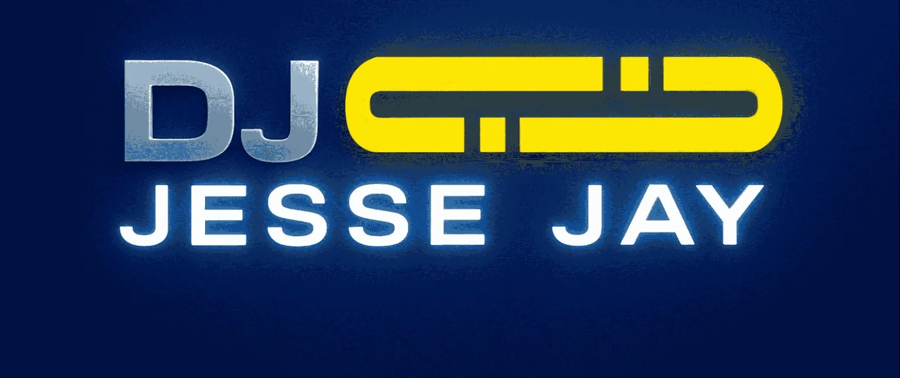

Do.03.04.14 Galaxy Space Night
6h live mixes,brand new stuff, me and many more on Radio LoRa!
DJ Jesse Jay
since 1997 the progressive music attack
Radio LoRa, Donnerstag 00:00–06:00: Blue Dimension und Galaxy Space Night.

Neueste News
Do.16.10.14 Galaxy Space Night
6h live mixes,brand new stuff, me and many more on Radio LoRa!
Do.16.10.14 Galaxy Space Night
6h live mixes,brand new stuff, me and many more on Radio LoRa!